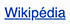
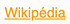

Les pseudo-classes sont matière courantes sur le web, il est probable que vous en ayez déjà utilisé sans même le savoir. L'un des exemples les plus fréquents est :hover.
Leur utilité principale est de permettre d'ajouter ou de redéfinir des styles à un élément lorsqu'il respecte une condition particulière.
Par exemple, si un élément est survolé par la souris, sa condition est :hover.
Les pseudo-classes sont particulièrement utiles pour gérer l'apparence des liens en fonction de leur état.
Autre exemple le site Wikipedia, voici les états d'un lien sur ce site web.
:link
Lorsque le lien n'a pas encore été visité:
:hover
Lorsqu'il est survolé: 
:active
Lorsque le bouton de la souris est enfoncé: 
:visited
Lorsqu'il a déjà été visité:
:focus
Lorsque le lien reçoit le focus (appuyez sur tabulation ⇥ pour tester le changement de focus): 
EXERCICE
Pseudo-classes - Bouton
Pour cet exercice, vous devez utiliser les pseudo-classes afin de modifier l’apparence d’un bouton selon différentes conditions.
EXERCICE
Pseudo-classes - Cercles
Pour cet exercice, vous devez altérer l’apparence de chaque carré et de leur contenu en fonction du survole de la souris